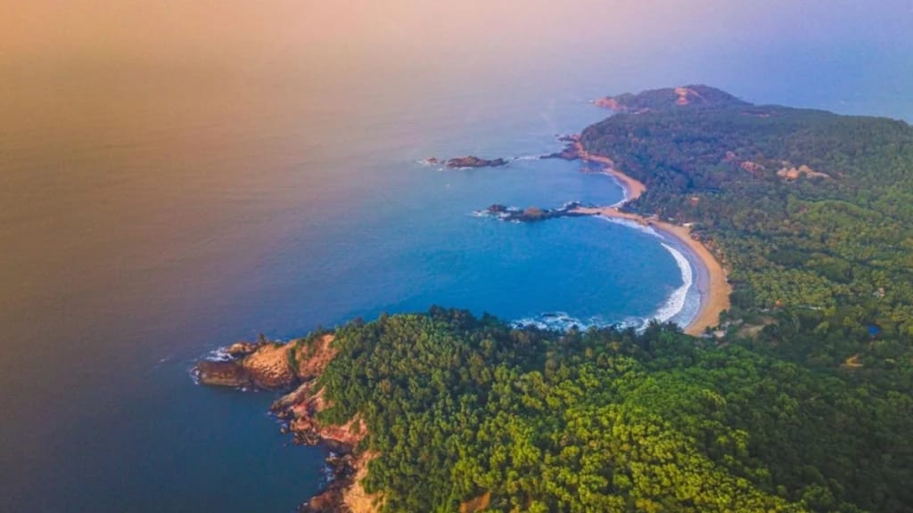

Gokarna is a popular destination in coastal Karnataka, known for its beaches, relaxed atmosphere and religious significance. A trip from Mangalore can combine a visit to the famous Mahabaleshwar Temple with time by the sea and a walk through the town.
Since the journey involves a considerable amount of road travel, planning your stops in advance can make the experience more comfortable. Consider your departure time, meal breaks, weather, road conditions and whether an overnight stay would suit your group.
1. Visit Mahabaleshwar Temple
Mahabaleshwar Temple is one of Gokarna's best-known religious landmarks. Devotees visit to offer prayers and experience the town's spiritual heritage.
Before visiting, check current temple timings, visitor instructions and any applicable dress expectations. Festivals and special occasions can attract larger crowds, so allow extra time for parking and the temple visit.
2. Discover Gokarna's Beaches
Gokarna is known for its coastal scenery and beaches. Depending on your interests and available time, you can choose a beach for a quiet walk, photography or simply relaxing by the shoreline.
Beach access differs from place to place. Some locations involve walking on slopes, rocky surfaces or uneven paths, so consider the needs of children, older travellers and anyone with limited mobility before choosing your stops.

3. Explore Gokarna Town
Keep some time for the town itself. You can explore local shops, enjoy a meal and experience the atmosphere around its religious and cultural landmarks.
If your itinerary includes more than one beach, remember that moving between locations and finding suitable parking may take additional time. Avoid packing too many activities into the late afternoon.
4. Suggested Two-Day Itinerary
A two-day trip gives you more flexibility to enjoy Gokarna without trying to fit every attraction into a single day. Use this sample plan as a starting point and adjust it to your travel dates and preferences.
- Start from Mangalore at a suitable time.
- Take breaks during the road journey as needed.
- Reach Gokarna and check in if staying overnight.
- Visit Mahabaleshwar Temple if time and current timings permit.
- Enjoy dinner and rest for the next day.
- Have breakfast and select one or two suitable beaches.
- Spend time enjoying the coastline and local surroundings.
- Have lunch and prepare for the return journey.
- Allow time for traffic, rest stops and changing road conditions.
Your actual schedule will depend on the departure point, traffic, weather, accommodation and the time needed at each attraction. Confirm your route and estimated journey duration before leaving.
5. Coastal Travel Safety
Keep these practical points in mind during your visit:
- Follow lifeguard instructions and all beach warning signs.
- Avoid swimming when sea conditions are unsafe.
- Wear suitable footwear on rocky paths and uneven terrain.
- Carry drinking water, sun protection and necessary personal items.
- Check the weather forecast before travelling.
- Keep your itinerary flexible during heavy rain or poor visibility.
- Allow your driver adequate rest and avoid a rushed return schedule.
6. Choosing a Vehicle for Your Gokarna Trip
Select a vehicle based on passenger count, luggage and the comfort required for a longer journey. Families may prefer extra luggage space, while larger groups may need a suitable multi-passenger vehicle.
Before confirming a booking, ask for the complete quotation and clarify the planned route, included distance, travel duration, tolls, parking, driver allowance, waiting charges and overnight arrangements where applicable.
7. Plan Your Trip with Radhakrishna Taxi Service
Radhakrishna Taxi Service accepts enquiries for travel from Mangalore to destinations across coastal Karnataka. Share your preferred dates, pickup location, number of passengers and planned stops to request availability and pricing for your Gokarna journey.
Send your Gokarna trip enquiry on WhatsApp or call +91 81477 71217.
Frequently Asked Questions
Is Gokarna suitable for a family trip?
Yes, it can be suitable for families who choose accessible attractions and plan around road travel, beach conditions and walking distances.
Should I stay overnight in Gokarna?
An overnight stay can make the trip more relaxed, especially if you want to visit the temple and explore multiple beaches.
Are all Gokarna beaches easy to access?
No. Access varies between beaches, and some involve uneven paths or slopes. Check local conditions and choose locations suitable for everyone in your group.
How can I enquire about a taxi for this trip?
Contact Radhakrishna Taxi Service by phone or WhatsApp with your travel dates, pickup location, passenger count and planned stops to request a quotation.
Travel conditions, temple schedules, beach access and local facilities can change. Confirm current information before your journey.